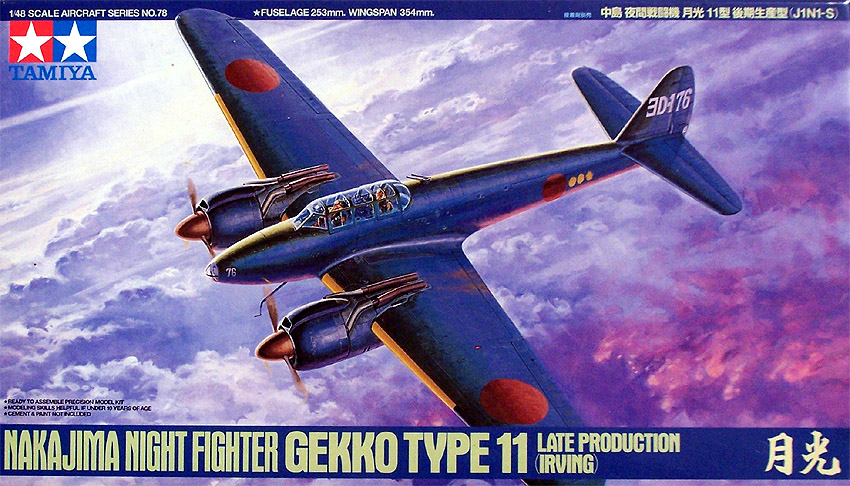
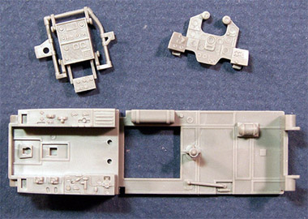
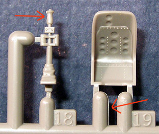
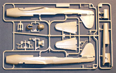
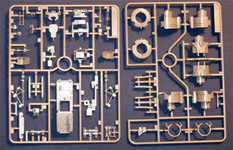
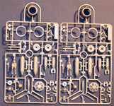
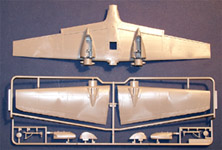
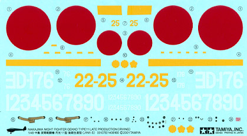

{kind=link}
{kind=link}
{kind=link}
{kind=link}
{kind=link}


Tamiya 1/48 Nakajima J1N1-S “Gekko”

Kit #61078 MSRP $45.00
Images and text Copyright © 2005 by Matt Swan
Developmental Background
The Nakajima Type 11 fighter, code name "Irving," was an obscure aircraft when compared to Japan's famous "Zeke" (Zero), "Val," and "Kate." Its development goes back to 1938, when the Japanese Navy was planning a twin-engine fighter to support its long-range bombers. In that year, the Japanese Naval Bureau of Aeronautics met to draft a 13-Shi specification to meet this need. The French Potez 63, which was about to enter service with the Armee de l’Air, inspired them and there is a noticeable physical resemblance to the French aircraft.
The Nakajima Company proposed the 13-Shi Twin-engine Land-Based Fighter (J1N1), which used two 1000hp "Sakae" engines, one on each of its main wings. The three-seat J1N1 was designated as a reconnaissance aircraft after failing testing since it proved inferior to single-engine fighters of the time. However, the need to counter the nocturnal B-17 bombers in the Southwest Pacific led to its conversion into a night-fighter. This transformation came about by positioning the armaments to fire at an oblique angle from the line of flight, allowing the fighters to swiftly strike the bombers while maintaining a parallel course and speed with a target either above or below. Official production began in 1943 on a night fighter version, the J1N1-Cs. Modifications included removing third seat, adding twin-mounted 20mm guns behind cockpit canopy angled up at 30 degrees and underneath fuselage angled down at 30 degrees.
Later in 1943 the dedicated night fighter was designated J1N1-S Gekko (Moonlight) Night Fighter Model 11. Production began at Koizumi in August of 1943, and the J1N1-S was destined to become the major production variant. The Gekko featured a completely redesigned upper fuselage, with the observer's position being completely deleted, reducing the crew to only two. This made it possible to eliminate the step that had been previously been located between the rear of the observer's cockpit and the base of the vertical fin. One Gekko crew was credited with shooting down five B-29s in one night. Production of the J1N1 series ended in December of 1944 after the delivery of 479 examples, including prototypes. Most of the Gekko aircraft were expended in kamikaze attacks.
The Kit
Tamiya has made two versions of this aircraft, the late and the early. Oddly enough, it was the late version that hit the market first quickly followed by the early version. I think it’s evident in the parts design that both versions were intended from the get-go. Today we’re going to look at the late or “S” version.
The model arrives in a good size box that has some mass. The many trees of parts inside generate this mass. There are five main poly bags containing seven parts sprues and a secondary bag with the clear parts. Let’s talk about the large pieces first, the fuselage halves are cast with the upper spine area as a separate piece which allows for the main mold to be used for either the late or early version of the aircraft. We only get the late version spine in this box so don’t get too excited.


The wing is cast in three pieces with the lower half being one continuous piece, which provides for a positive dihedral. The aft portion of the engine nacelles is cast into the wing and the forward portion is a three-piece assembly that mounts onto large alignment pins. Optional cowl flaps are included for open or closed flaps. The interior of the fuselage sections has an amazing level of detail. Combine this with the sharp detail provided on the instrument panels, seats and various controls and you have a kit that has little if any need for aftermarket cockpit parts.
To the left you can see a close up of the cockpit floor pan and a couple of the instrument panels. Notice that the instrument faces are blank on these panels. Instrument details are provided via decals. To the right we have one of the crew seats and the control stick. Note the two red arrows indicating the slight mold separation lines. These lines are not evident on all the pieces and should be easily dealt with. Throughout the model, we find a combination of finely raised detail and crisp engraved detail. The kit includes a clear nosepiece and detailed nose bay but also includes a radar nose. There is no mention of this conversion in the kit instructions so there may be additional version of the model in the wings. The spine section features an access door that could be modeled open or closed. Open seems like a good idea as the interior detail of the cannons is great.
Everywhere I look in this kit I find loads of detail. The quality of the parts is very good also. Other than a slight mold separation seam on some of the parts there is no flash evident, no sink marks or injector pins on any of the parts. The clear parts are crystal clear with crisp raised frame lines. Here we have optional parts to build the canopy open or closed. Overall, we have 14 clear parts and 142 parts in medium gray plastic and two poly caps for the propellers for a total parts count of 158 pieces in the box. That should be enough to keep you busy for a day or two.




You may click on the small images to view larger pictures
Decals and Instructions

To help you get these 158 pieces together into a presentable model Tamiya has included some pretty comprehensive instructions. We have a large foldout that consists of ten panels. The opening panel contains a well-done historical background on the aircraft in four languages. Following this is a comprehensive paint chart listing paints by Tamiya pant codes and by color name. Next are sixteen exploded view construction steps. Within these steps, we have plenty of color call-outs and construction tips. Panel number eight also includes a paragraph on general exterior paint philosophy. The last two panels show decal placement and exterior color schemes.
The kit includes decals for two aircraft from Naval Fighter groups. Marking for the exterior are somewhat brief including only the basic unit markings, hinomarus and propeller markings. There are quite a few instrument decals for the cockpit and lap belts are included as decals. Tamiya has a history of iffy decals but these appear to be acceptable. The print registry is good and the color density looks good. They do not look to be excessively thick but I’ll keep some heavy duty setting solution on hand when applying them.
Conclusions
Digging through the box I can’t help but think how amazing this kit is. The quantity of parts, quality of casting and level of detail all combine to create an incredible model. As complete as this model seems there are still a few aftermarket items that could be utilized. Eduard makes a couple of photo etch sets to further enhance the cockpit and engines along with stencil sets for the national markings and unit markings so you can get completely away from the decals. Cutting Edge, Eduard and E-Z Mask all offer various masking packages for the model. Czech Master Kits has a set of resin and PE engines while AML offers a set of replacement decals. Even without the aftermarket pieces this model has enough to create an impressive piece built right from the box.